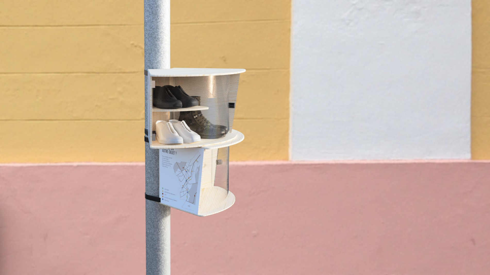
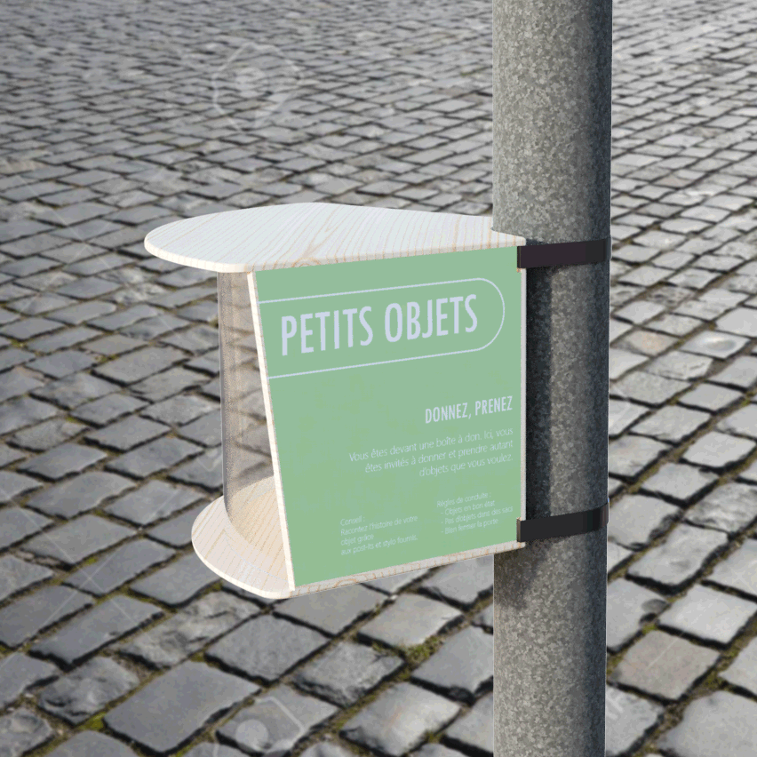
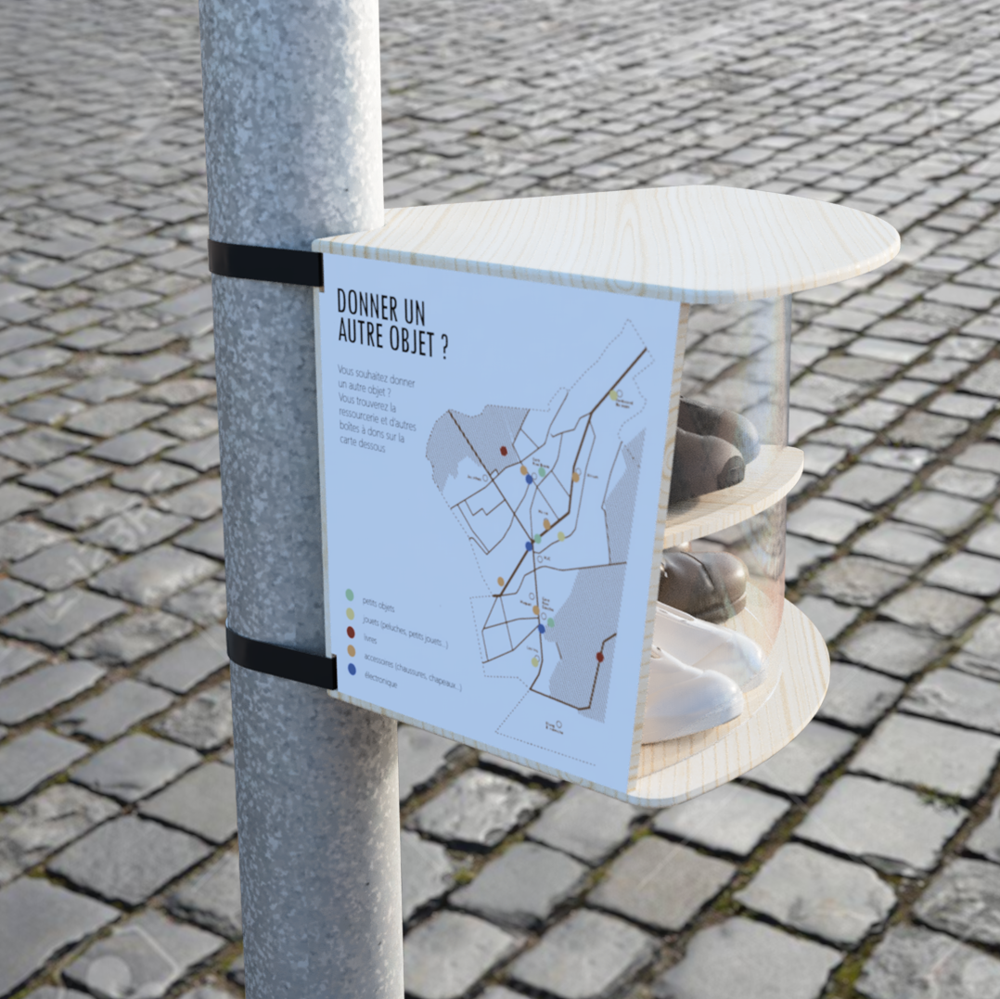
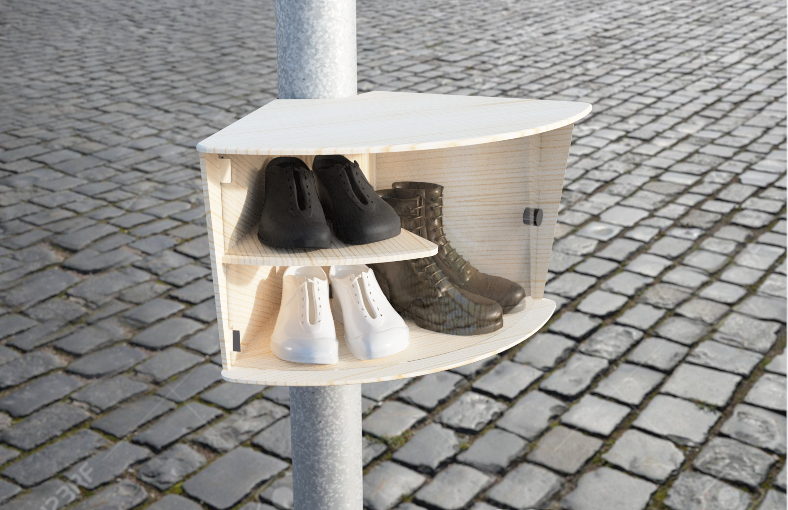
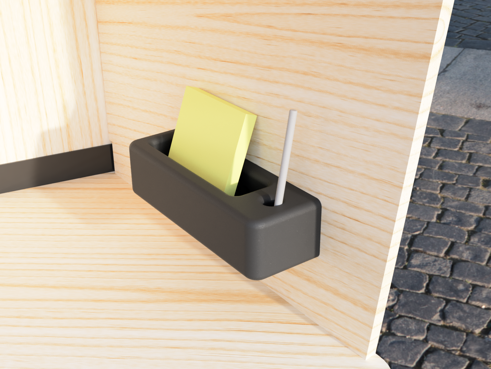
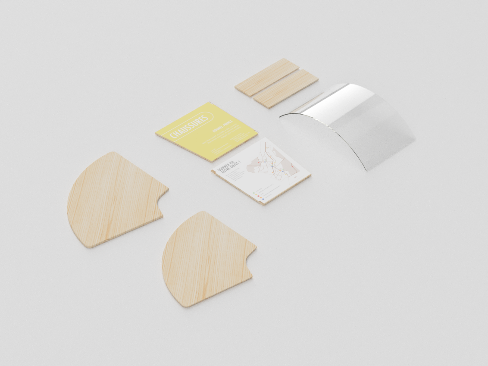

×
The givebox
The Givebox modules were made for a local citizen association in order to help people give away the objects they no longer use.
Date
2021
My role
Service design
Product design
Duration
3 weeks
Team size
4 members
Client
Vivons Chaville Ensemble

Using existing city polls cuts down the costs and allows a greater flexibility.
>view in AR Android east
view in AR iOS east
Unused objects represent an average of 200 kg per habitant, in France
Why don’t people give stuff away?They aren’t trigerred to think about their unused objects.
Personnalized fit
The giveboxes are designed for particular objects, to better fit them.
Colors are attributed for each category of object in order to make the boxes differenciable from far away.

Optimal position in the city
Making smaller boxes allow the giveboxes to be situated where it makes sense for them to be.
They are spread out in the city for a better visibility.


The inside of each box changes to better optimize the space inside.
Storytelling
Giving more than objects,giving stories
A pen and post-its are in each box to allow citizens to describe their object and the story they had with it. We have realized that people naturally did that in book giveboxes, giving tips or anecdotes about the book itself.

Building
Easily building the giveboxes
They are built with reclaimed wood to lower the costs of the construction of the boxes by the association, and were thought to be easily built.
